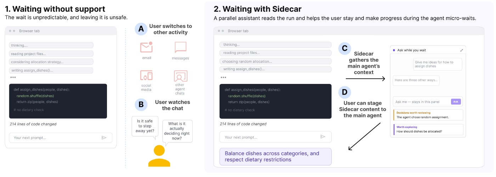

01 · 控制与恢复
长任务的等待并不总是纯粹空闲：用户可能想起另一项要求，想核对代理隐含的选择，或者准备结果出来后的修改。切换到独立聊天容易丢失上下文，直接在主对话追加指令又可能改变尚未完成的执行。Sidecar把这段思考放进并行的只读侧边对话，读取当前可见的聊天、运行轨迹、编辑器、画布或预览。它提供理解隐含决策和探索替代方向的入口，让“想一想”与“立即要求主代理执行”保持不同状态。这是控制边界，而不只是多放一个聊天窗口。
Sidecar · 论文 · 浏览器原型
同一项目的完整分析。研究截止为14:00:02Z；来源核验与图片获取在后，不改变事件日期。

长任务的等待并不总是纯粹空闲：用户可能想起另一项要求，想核对代理隐含的选择，或者准备结果出来后的修改。切换到独立聊天容易丢失上下文，直接在主对话追加指令又可能改变尚未完成的执行。Sidecar把这段思考放进并行的只读侧边对话，读取当前可见的聊天、运行轨迹、编辑器、画布或预览。它提供理解隐含决策和探索替代方向的入口，让“想一想”与“立即要求主代理执行”保持不同状态。这是控制边界，而不只是多放一个聊天窗口。
用户可以把有价值的想法暂存，再明确提升到主输入框；这个动作不等于自动发送，也不应被理解为已经修改正在运行的任务。侧栏可停靠、移动和最小化，让用户自行决定何时需要它。研究由十二人的形成性工作与十六人的组内实验组成，涉及视频和原型条件；参与者报告较少的感知碎片化与上下文切换，同时心理负担更高。这种双向结果提醒产品团队，填满等待时间未必减轻工作。如果侧栏不断提供新问题或替代路线，用户可能保持忙碌，却需要在主任务完成后处理更多未决选择。
与私人笔记、第二个聊天窗口、单纯进度显示或执行中途改指令相比，Sidecar的差异在于共享可见上下文并保留明确的提交边界。采用需要让用户知道侧栏建议尚未成为执行要求，主任务变化后还要检查暂存内容是否过时；预计完成时间也不能被当成可靠承诺。可证伪的验证应在等待后检查用户是否记得原意、能否准确接续任务、是否减少互相矛盾的修改，并同时测量心理负担，而不是只统计侧栏消息量。
若它制造更多想法却让最终决策更慢，收益就不成立。现有短期研究也不能说明新鲜感消退后的长期使用效果，更不能从作者机构推断为Google已经推出的新产品。